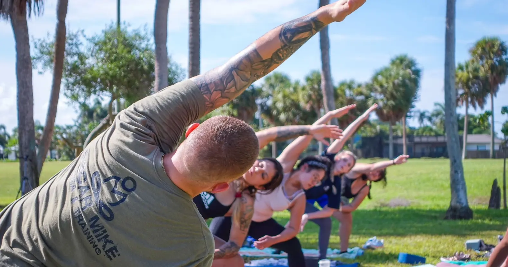
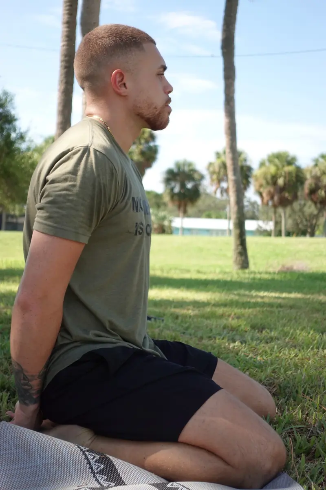

<div class="about-container">
    <div class="about-wrapper">
        <section class="bussiness-section">
            <div class="bussiness-container">
                <div class="backgrounds">
                    
                    
                </div>
                <div class="bussiness-wrapper">
                    <div class="image-wrapper">
                        
                    </div>
                    <div class="content">
                        <p class="title">About the business</p>
                        <p class="text">At O.M. Yoga & Training, the acronym ”O.M.” holds multiple meanings. One of which is the military term, Oscar Mike. 
                            When used as a call sign, Oscar Mike is interpreted as code for ”On the Move.”<br><br>

                            Being that we are a mobile and veteran-owned company that promotes holistic wellness through
                            intentional body movement, staying “On the Move” is a vital part of our mission. <br><br>

                            Additionally, the ”O.M.” pays tribute to the roots and history of yoga. In the yoga realm,
                            “om” is recognized as the highest vibration and purest energy that connects all things in
                            existence. <br><br>

                            This word symbolizes the positive experiences and meaningful connections that we aim to
                            cultivate as a company.</p>
                    </div>
                </div>
            </div>
        </section>

        <section class="teacher-section">
            <div class="teacher-container">
                <div class="backgrounds">
                    
                    
                </div>
                <div class="teacher-wrapper">
                    <div class="image-wrapper">
                        
                    </div>
                    <div class="content">
                        <p class="title">About Alan</p>
                        <p class="text">Meet Alan Torres, a dedicated yoga teacher, health and wellness coach,
                            entrepreneur, and army veteran with over a decade of experience in practicing yoga. <br><br>

                            After serving in the U.S. Army, Alan went on to become an alumnus of the University of South
                            Florida and continued his studies at the National Personal Training Institute in Tampa where
                            he received his Personal Training Diploma. <br><br>

                            Alan then discovered his passion for teaching yoga and pursued a 200-Hour Yoga Alliance
                            Teacher Training from My Vinyasa Practice based in Austin, TX. <br><br>

                            In 2022, Alan founded O.M. Yoga & Training with a mission to build meaningful relationships
                            and promote holistic well-being. <br><br>

                            Alan takes great pride in serving clients not only in the Greater Tampa Bay Area but also
                            nationwide, offering top-notch, mobile yoga and fitness instruction to individuals from all
                            walks of life.</p>
                    </div>
                </div>
            </div>
        </section>

        <section class="question-section">
            <div class="question-container">
                <div class="backgrounds">
                    
                    
                </div>
                <div class="question-wrapper">
                    <div class="content">
                        <p class="title">Frequently Asked Questions</p>
                        <p class="text">We're here to provide you with all the information you need to make informed
                            decisions about your needs.</p>
                    </div>
                    <div class="faqs">
                        <div class="accordions" *ngFor="let faq of faqs">
                            <app-accordion [question]="faq.question" [answer]="faq.answer"></app-accordion>
                        </div>
                    </div>
                </div>
            </div>
        </section>
    </div>
</div>